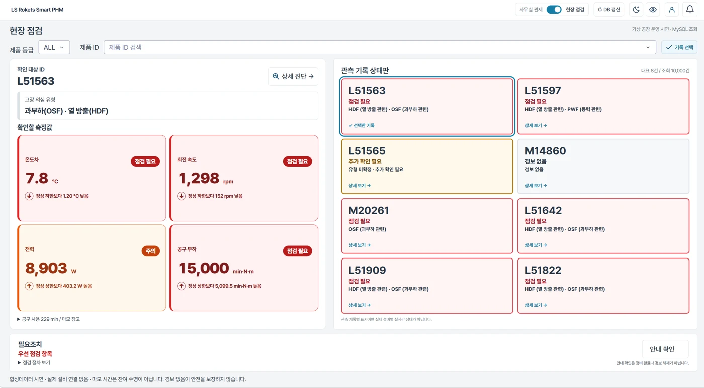
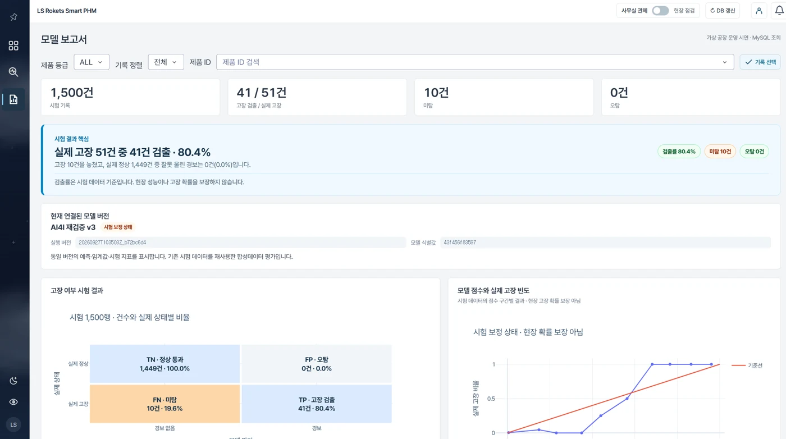

설비 상태 진단 대시보드
센서 값으로 고장을 판단하고 점검할 설비를 고르는 대시보드
- 문제
- 경보가 여러 개 뜨면 무엇부터 볼지 판단하기 어려움
- 내가 한 일
- 화면 요구사항 작성, 숫자·그래프 검수, 발표
- AI가 한 일
- 화면 초안 (Codex)
- 팀이 한 일
- 모델·서버·DB. 제 기여도 25% (팀 합의)
- 결과
- 고장 51건 중 41건 검출, 오탐 0건 (팀 결과)
달라진 점근거 없는 숫자는 화면에서 빼게 했습니다.
증거
- 팀 저장소의 내 작업 브랜치 커밋 기록
- 숫자 출처: 발표 자료 (저장소 밖이라 링크 없음)
정한 일과 이유
- 데이터에 없는 시간 축과 남은 수명, 확인하지 않은 성능 숫자는 화면에 넣지 말라고 AI에게 요구했습니다.
- 팀은 정확도 대신 “놓친 고장 수”를 기준으로 삼았습니다. 고장이 3%뿐이라 전부 정상이라고만 해도 정확도가 96.61%가 나오기 때문입니다.